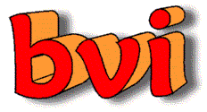

Welcome to the

Homepage
Here you can find all the informations about bvi you need.
The bvi is a display-oriented editor for binary files, based on the vi texteditor. If you are familiar with vi, just start the editor and begin to edit! A bmore programm is also included in the package.
If you never heard about vi, maybe bvi is not the best choice for you.
Current: Version 1.3.2
You can download source and compiled versions from the download page.Check out whats new in 1.3.2!
Newsgroup: comp.editors
Mailing List (very low traffic):
To join this list, simply send a blank email to bvi-subscribe@yahoogroups.com. You will receive a subscription confirmation message. Simply reply this message and your subscription will be complete.Bvi was developed by Gerhard Bürgmann and is published under the GNU Public License. Current stable version is 1.3.2. Bvi is running on most UNIX - like operating systems and on MSDOS.
If you want to contact me:
Gerhard Bürgmann, Vienna ( Purkersdorf ) / Austria / Europe
E-mail: gerhard@puon.at
Have a look at Meta Chrom Kennzeichenhalter
Last update: January 8th 2004 by Gerhard Bürgmann